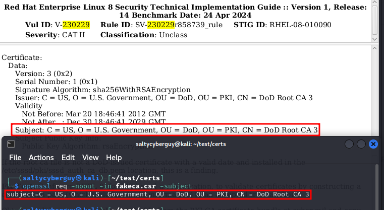

Don't Bow to the STIG. Scrutinize It!
Disclaimer: All views are my own and do not represent anyone else.
Introduction
If you or your friends have done any DoD related IT work, then you probably came across the term Security Technical Implementation Guides or STIGs. STIGs are hardening guidelines that cover a wide range of topics such as operating system, software development, containerization, network equipment configuration, web browsers and more.
The “application” of STIGs normally takes a form of a checklist that is followed by IT/cyber security personnel. Those checklists have applicable configuration items, denoted by vulnerability or rule IDs. Each of those STIG items corresponds to a “security setting” that must be applied to the underlying system in order for it to be “compliant”.
Most of the time the sys admins or cyber folks applying the STIG settings do a fine job of copy/pasting with some sprinkles of automation, without really digesting the content of the actions prescribed by the STIGs.
Proving the Point
There is a very disturbing trend in the DoD to take STIGs as the ultimate source of truth, without understanding of what the prescribed solutions actually do. It is very common to hear, “Oh, I did it because it’s in the STIGs.”
However, it would be prudent to remember that STIGs are a DoD product, (think of the typical government work quality) and as such, if anything, deserve extra scrutiny.
Here is a great example of what I’m talking about that is present in the current (as of this writing) RHEL8 STIG released on 30 April 2024.
The item in question is denoted by Vul ID: V-230229.
The “Check Text” (as confusing as it is) has the following line:
If the root ca file is not a DoD-issued certificate with a valid date and installed in the /etc/sssd/pki/sssd_auth_ca_db.pem location, this is a finding."
and displays the output from the openssl x509 command listed a few lines
earlier. See image below.
The STIG authors seem to suggest that the certificate validation should be performed based on the content of the certificate subject field as well as validity timestamps. A prudent sys admin or cyber person would immediately ask the following question: I wonder if someone can generate a self-signed TLS CA cert with those exact values?
The only way to find out is to try.
The following directory structure is assumed for testing:
|--demoCA
|-- index.txt
|-- newcerts
|-- serial
|--fakeca.csr <== will be generated
|-- fakeca.pem <== will be generated
|-- privkey.pem <== will be generated
The base skeleton setup can be created with the following commands:
$ mkdir -p demoCA/newcerts
$ touch demoCA/index.txt
$ echo 0001 > demoCA/serial
Let’s start by generating a private TLS key and a Certificate Signing Request (CSR) with the desired subject fields:
$ openssl req -new -newkey rsa:4095 -nodes -keyout privkey.pem -out fakeca.csr -batch -subj "/C=US/O=U.S. Government/OU=DoD/OU=PKI/CN=DoD Root CA 3" -addext "basicConstraints=critical,CA:TRUE"
Let’s verify that the subject contains correct values by running the following:
$ openssl req -noout -in fakeca.csr -subject

Let’s sign the CSR while adding desired dates and double-checking the subject fields one more time before approving the newly-minted CA.
$ openssl ca -in fakeca.csr -keyfile privkey.pem -extensions v3_ca -selfsign -policy policy_anything -out demoCA/newcerts/newcert.pem -startdate 20120320184641Z -enddate 20291230184641Z
Finally let’s compare our newly-minted CA’s subject and timestamp values against the ones listed in the STIG check field.
openssl x509 -noout -text -in demoCA/newcerts/newcert.pem
It appears that our newly-minted CA would pass the Check Text criteria cited earlier. Cheers!
A forged PKI CA certificate and a passed STIG check. Score!!!
Not Everything is Lost if One Exercises Due Diligence
Thankfully, not all is lost if the DoD sys admins and cyber folks don’t blindly follow what the STIGs say. As it turns out there is a better way to validate the CA certs, and the DoD actually publishes it. Of course this method is buried in the endless piles of the US government-issued memos. However, with a little bit of web searching a patience, one will eventually stumble across the official DoD memo containing the SHA1 fingerprint (aka DoD Approved External PKI Master Document) of the certificate in question.
See image below:
Now, all the sys admin has to do is to generate the SHA1 fingerprint of the cert installed on the system and compare it to the one published in the official memo.
The cert fingerprint can be generated as follows:
$ openssl x509 -fingerprint -in /path/to/cert
Here is what the result should look like:
Lessons Learned
STIGs are a government product written by humans and are therefore bound to contain errors and oversights. While there are some brilliant folks working in the government, doing good cybersecurity work, they are probably not the ones writing STIGs. Something to keep in mind as you apply them.